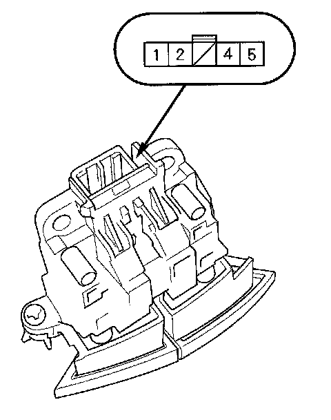
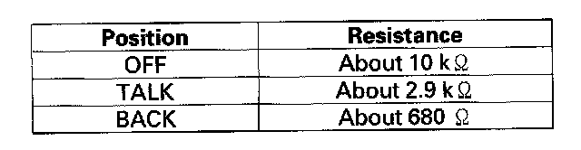
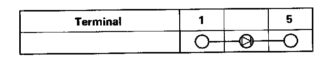

2-Door
Voice Control Switch Test2-door model

1. Remove the voice control switch.

2. Measure the resistance between the No.2 and No.4 terminals in each switch position according to the table.
3. If the resistance is not as specified, replace the voice control switch.

4. Use a diode tester between the terminals in each switch position according to the table.
5. If the diode test is not as specified, replace the switch.